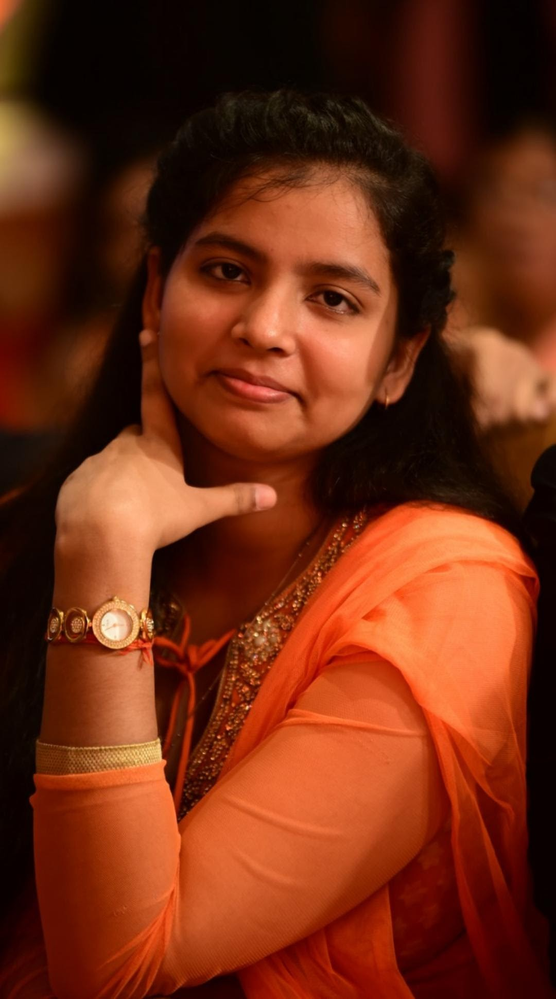

UJJAWALA BHARTI
Ujjawala Bharti a person with a great personality ,always provides a comfort zone to us when we communicate , we feel very honoured to be as luckiest as we are.she solve all the problems without any fear.Her way of communication is great and she explains any topics in simple and mannered way.when we are near to her we always feel positivity around us and feel confident also.
PRIYE RANJAN
Priye Ranjan a person with great positive directive throughts , always try to guide the people of this group and provides us a concept of healthy connectivity and helping the persons who are in need , even he teaches us the lessons of professionalism.He always connect with us and never try to insult us on our mistakes , rather he try to make us realise that what mistakes we have done.
.jpeg)
PRANAV RANJAN
Pranav Ranjan a person with great motivational throughts , always motivates in each and every aspect of that person's life even his body posture shows a way of positive attribute and his way of communication always provide a kind of comfortness to us.The best thing about him is that he doesn't have any kind of ignore , selfishness or any bad habits and alway shares his experience on different aspect of his life.